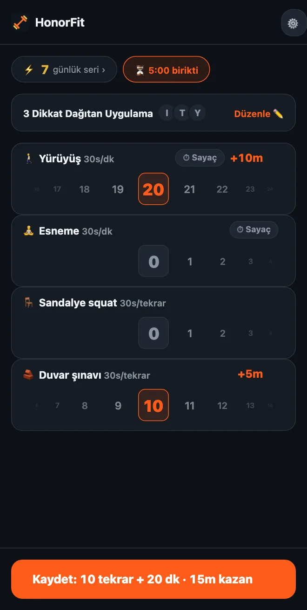

Şınav çekemiyor musun? Uygulamalarının kilidini açmak için düşük etkili egzersizler
Selam millet! HonorFit daha çok bir şınavlı uygulama engelleyici olarak biliniyor: birkaç tekrar yapıp kendin kaydedene kadar uygulamaların kilitli kalıyor. Ama bileklerin, omuzların ya da dizlerin bunu pek sevmiyorsa, bütün gün masa başındaysan ya da şınav şu an olacak iş değilse, hiç sorun değil.
Benim için asıl mesele hiçbir zaman şınav değildi. Mesele, seninle kaydırma arasında küçük bir hız kesici olması; üstelik sana iyi gelen bir hız kesici. Mahallede kısa bir yürüyüş de bunu aynı derecede iyi yapıyor. HonorFit'i gerçekten yapabildiğin şeylere göre nasıl kuracağını anlatayım.
Ücretsiz sürümdeysen
Ücretsiz sürüm dört hazır egzersiz veriyor: şınav, mekik, barfiks ve squat. Bunların içinde en naziği squat ve her biri 30 saniye değerinde.
Ayrıca onur sistemi olduğu için kimse squat'ının nasıl göründüğünü kontrol etmiyor. Tam squat fazla geliyorsa, sandalyeden kalkıp geri oturmak da sayılır. Duvara ya da mutfak tezgâhına karşı şınav için de aynısı geçerli. Bir tekrarın ne olduğuna sen karar veriyorsun ve sadece dürüstçe kaydediyorsun.
Pro ile: kendi egzersizlerini seç
Pro (ABD'de aylık 3 dolar ya da tek seferlik 19,99 dolar; fiyatlar ülkeye ve para birimine göre değişiyor, mağaza sana kendi fiyatını gösterir) egzersiz eklemene, yeniden adlandırmana, silmene ve her birinin ne kazandıracağını ayarlamana izin veriyor. Oraya ana ekrandaki dişliden, sonra Egzersizler kartından ulaşıyorsun. Düzenleyicinin her adımını burada anlattım. Ben olsam şunlara bakardım.
Süreli antrenmanlar (dakikayla kaydedilir)
Herhangi bir egzersizi Dakika'ya çevir ya da ⏱ olan önerilerden birine dokun. Buraya uyanlar:
- 🚶 Yürüyüş. Bunun için favorim. Muhtemelen var olan en kolay kazanç.
- 🧘 Yoga, ya da yaptığın daha çok buysa adını Esneme olarak değiştir.
- 🏊 Yüzme ve 🚴 Bisiklet, ikisi de eklemleri yormaz.
- 🪷 Meditasyon. Egzersiz değil ama listede var ve on dakikalık sessizlik, on dakikalık TikTok için gayet iyi bir takas.
Süreli antrenmanlar dakika başına 30 saniye uygulama süresiyle başlar, yani 20 dakikalık bir yürüyüş 10 dakika kazandırır. Çark tam dakika sayar, tek seferde 100'e kadar.
Masa başı hareketler (tekrarla kaydedilir)
＋ Egzersiz ekle'ye dokun ve bir ad yaz. Ofiste ya da küçük bir evde ekipmansız yapılabilecek birkaç tane:
- Sandalye squat (otur-kalk): sandalyenden kalk, geri otur.
- Duvar şınavı ya da masa şınavı: duvara ya da sağlam bir masaya karşı şınav. Yüzey ne kadar yüksekse o kadar kolay.
- Parmak ucunda yükselme: parmak uçlarına kalk, geri in. Mikrodalgayı beklerken bile yapabilirsin.
- Yerinde yürüme: Diz çekerek koşu önerisi, sadece daha yavaş. İstersen adını değiştir.
- Kalça köprüsü ve Kegel: sessiz, ekipmansız, üstelik Kegel'i bir toplantıda kimse fark etmeden yapabilirsin. Bunlar hakkında koca bir yazı yazdım.
Sabit tutuşlar (plank, duvar oturuşu)
Dakika çarkı tam dakika saydığı için 20 saniyelik bir plank oraya pek uymuyor. Ben sabit tutuşları Tekrar'da bırakır ve bir tekrarın ne demek olduğuna karar verirdim, mesela “20 saniyelik bir tutuş”. Plank ve Duvar oturuşu önerilerde zaten var.
Her biri ne kadar kazandırmalı?
Yeni egzersizler tekrar başına 30 saniyeden başlar. Değeri 5'er saniye artırıp azaltabilirsin. Birkaç başlangıç noktası:
| Egzersiz | Sayım | Kazandırdığı | Örneğin |
|---|---|---|---|
| 🚶 Yürüyüş | Dakika | Dakika başına 30s | 20 dakikalık yürüyüş = 10 dk |
| 🧘 Esneme | Dakika | Dakika başına 30s | 10 dakika = 5 dk |
| 🪑 Sandalye squat | Tekrar | Tekrar başına 30s | 10 = 5 dk |
| 🧱 Duvar şınavı | Tekrar | Tekrar başına 30s | 10 = 5 dk |
| Parmak ucunda yükselme | Tekrar | Tekrar başına 10–15s | 15s'den 20 tane = 5 dk |
| Plank | Tekrar (1 tekrar = 20s tutuş) | Tekrar başına 1 dk | 3 tutuş = 3 dk |
Bunlar sadece bana adil gelen tahminler. Doğru sayı, şişirmek yerine gerçekten ödeyeceğin sayı. En çok kazanmak istediğin alışkanlık yürüyüşse ona daha çok değer ver, mesela dakika başına 1 dakika.

Kopyalayabileceğin birkaç kurulum
- Masa başı gün: Sandalye squat, Duvar şınavı, Parmak ucunda yükselme, Yürüyüş.
- Nazik: Yürüyüş, Esneme, Sandalye squat, Duvar şınavı (yukarıdaki ekran görüntüsündeki bu).
- Sakin: Yürüyüş, Yoga, Meditasyon.
- Sessiz ev: Kalça köprüsü, Kegel, Sandalye squat, Yürüyüş.
Her biri ana ekranda kendi çarkını aldığı için ben üç dörtte tutardım.
Bir sakatlığın, ağrın ya da bir sağlık sorunun varsa, senin için neyin uygun olduğunu doktoruna ya da bir fizyoterapiste sor. Ben uygulama engelleyici yapıyorum; dizlerini soracağın adam ben değilim, haha.
HonorFit Blocker, iPhone ve Android için ücretsiz bir uygulama engelleyici. Onur sistemi, kamera yok, hiçbir şey telefonundan çıkmıyor. Özel egzersizler ve süreli antrenmanlar Pro ile geliyor. Herkese göre değil ama belki bazılarınızın hoşuna gider!